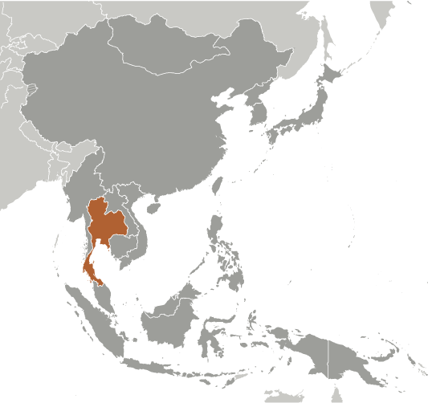
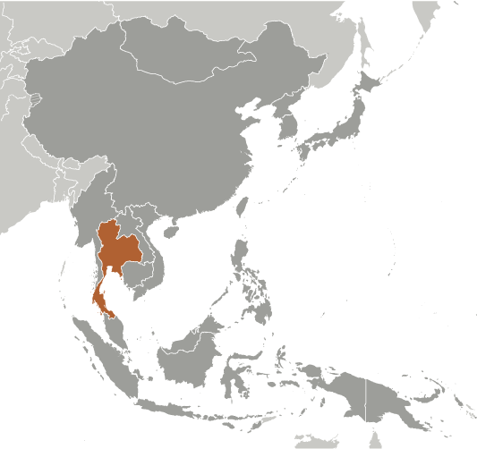

East & Southeast Asia :: THAILAND
Introduction :: THAILAND
-
A unified Thai kingdom was established in the mid-14th century. Known as Siam until 1939, Thailand is the only Southeast Asian country never to have been colonized by a European power. A bloodless revolution in 1932 led to the establishment of a constitutional monarchy. In alliance with Japan during World War II, Thailand became a US treaty ally in 1954 after sending troops to Korea and later fighting alongside the US in Vietnam. Thailand since 2005 has experienced several rounds of political turmoil including a military coup in 2006 that ousted then Prime Minister THAKSIN Chinnawat, followed by large-scale street protests by competing political factions in 2008, 2009, and 2010. THAKSIN's youngest sister, YINGLAK Chinnawat, in 2011 led the Puea Thai Party to an electoral win and assumed control of the government. A blanket amnesty bill for individuals involved in street protests, altered at the last minute to include all political crimes - including all convictions against THAKSIN - triggered months of large-scale anti-government protests in Bangkok beginning in November 2013.In early May 2014, YINGLAK was removed from office by the Constitutional Court and in late May 2014 the Royal Thai Army, led by Royal Thai Army Gen. PRAYUT Chan-ocha, staged a coup against the caretaker government. PRAYUT was appointed prime minister in August 2014. The interim military government created several interim institutions to promote reform and draft a new constitution, which was passed in a national referendum in August 2016. Elections are tentatively set for mid-2018. King PHUMIPHON Adunyadet passed away in October 2016 after 70 years on the throne; his only son, WACHIRALONGKON Bodinthrathepphayawarangkun, ascended the throne in December 2016. He signed the new constitution in April 2017. Thailand has also experienced violence associated with the ethno-nationalist insurgency in its southern Malay-Muslim majority provinces. Since January 2004, thousands have been killed and wounded in the insurgency.
Geography :: THAILAND
-
Southeastern Asia, bordering the Andaman Sea and the Gulf of Thailand, southeast of Burma15 00 N, 100 00 ESoutheast Asiatotal: 513,120 sq kmland: 510,890 sq kmwater: 2,230 sq kmcountry comparison to the world: 52about three times the size of Florida; slightly more than twice the size of Wyomingtotal: 5,673 kmborder countries (4): Burma 2,416 km, Cambodia 817 km, Laos 1,845 km, Malaysia 595 km3,219 kmterritorial sea: 12 nmexclusive economic zone: 200 nmcontinental shelf: 200-m depth or to the depth of exploitationtropical; rainy, warm, cloudy southwest monsoon (mid-May to September); dry, cool northeast monsoon (November to mid-March); southern isthmus always hot and humidcentral plain; Khorat Plateau in the east; mountains elsewheremean elevation: 287 melevation extremes: lowest point: Gulf of Thailand 0 mhighest point: Doi Inthanon 2,565 mtin, rubber, natural gas, tungsten, tantalum, timber, lead, fish, gypsum, lignite, fluorite, arable landagricultural land: 41.2%arable land 30.8%; permanent crops 8.8%; permanent pasture 1.6%forest: 37.2%other: 21.6% (2011 est.)64,150 sq km (2012)highest population density is found in and around Bangkok; significant population clusters found throughout large parts of the country, particularly north and northeast of Bangkok and in the extreme southern region of the countryland subsidence in Bangkok area resulting from the depletion of the water table; droughtsair pollution from vehicle emissions; water pollution from organic and factory wastes; deforestation; soil erosion; wildlife populations threatened by illegal huntingparty to: Biodiversity, Climate Change, Climate Change-Kyoto Protocol, Desertification, Endangered Species, Hazardous Wastes, Marine Life Conservation, Ozone Layer Protection, Tropical Timber 83, Tropical Timber 94, Wetlandssigned, but not ratified: Law of the Seacontrols only land route from Asia to Malaysia and Singapore; ideas for the construction of a canal across the Kra Isthmus that would create a bypass to the Strait of Malacca and shorten shipping times around Asia continue to be discussed
People and Society :: THAILAND
-
68,414,135note: estimates for this country explicitly take into account the effects of excess mortality due to AIDS; this can result in lower life expectancy, higher infant mortality, higher death rates, lower population growth rates, and changes in the distribution of population by age and sex than would otherwise be expected (July 2017 est.)country comparison to the world: 20noun: Thai (singular and plural)adjective: ThaiThai 97.5%, Burmese 1.3%, other 1.1%, unspecified <.1% (2015 est.)Thai (official) 90.7%, Burmese 1.3%, other 8%note: English is a secondary language of the elite (2010 est.)Buddhist 94.6%, Muslim 4.3%, Christian 1%, other <.1%, none <.1% (2015 est.)0-14 years: 16.93% (male 5,933,269/female 5,649,864)15-24 years: 14.17% (male 4,943,583/female 4,752,038)25-54 years: 46.32% (male 15,677,322/female 16,009,399)55-64 years: 12% (male 3,851,575/female 4,358,837)65 years and over: 10.58% (male 3,165,799/female 4,072,449) (2017 est.)total dependency ratio: 40youth dependency ratio: 25.2elderly dependency ratio: 14.8potential support ratio: 6.8 (2015 est.)total: 37.7 yearsmale: 36.6 yearsfemale: 38.7 years (2017 est.)country comparison to the world: 660.3% (2017 est.)country comparison to the world: 16911 births/1,000 population (2017 est.)country comparison to the world: 1798 deaths/1,000 population (2017 est.)country comparison to the world: 910 migrant(s)/1,000 population (2017 est.)country comparison to the world: 96highest population density is found in and around Bangkok; significant population clusters found througout large parts of the country, particularly north and northeast of Bangkok and in the extreme southern region of the countryurban population: 52.7% of total population (2017)rate of urbanization: 2.2% annual rate of change (2015-20 est.)BANGKOK (capital) 9.27 million; Samut Prakan 1.814 million (2015)at birth: 1.05 male(s)/female0-14 years: 1.05 male(s)/female15-24 years: 1.04 male(s)/female25-54 years: 0.98 male(s)/female55-64 years: 0.89 male(s)/female65 years and over: 0.78 male(s)/femaletotal population: 0.97 male(s)/female (2016 est.)23.3 years (2009 est.)20 deaths/100,000 live births (2015 est.)country comparison to the world: 129total: 9.2 deaths/1,000 live birthsmale: 10.1 deaths/1,000 live birthsfemale: 8.2 deaths/1,000 live births (2017 est.)country comparison to the world: 146total population: 74.9 yearsmale: 71.7 yearsfemale: 78.3 years (2017 est.)country comparison to the world: 1161.52 children born/woman (2017 est.)country comparison to the world: 19479.3% (2012)6.5% of GDP (2014)country comparison to the world: 920.39 physicians/1,000 population (2010)2.1 beds/1,000 population (2010)improved:urban: 97.6% of populationrural: 98% of populationtotal: 97.8% of populationunimproved:urban: 2.4% of populationrural: 2% of populationtotal: 2.2% of population (2015 est.)improved:urban: 89.9% of populationrural: 96.1% of populationtotal: 93% of populationunimproved:urban: 10.1% of populationrural: 3.9% of populationtotal: 7% of population (2015 est.)1.1% (2016 est.)country comparison to the world: 40450,000 (2016 est.)country comparison to the world: 1616,000 (2016 est.)country comparison to the world: 16degree of risk: very highfood or waterborne diseases: bacterial diarrheavectorborne diseases: dengue fever, Japanese encephalitis, and malaria (2016)10% (2016)country comparison to the world: 1409.2% (2012)country comparison to the world: 714.1% of GDP (2013)country comparison to the world: 47definition: age 15 and over can read and writetotal population: 92.9%male: 94.7%female: 91.2% (2015 est.)total: 16 yearsmale: 16 yearsfemale: 16 years (2015)total: 0.9%male: 0.8%female: 1.1% (2015 est.)country comparison to the world: 132
Government :: THAILAND
-
conventional long form: Kingdom of Thailandconventional short form: Thailandlocal long form: Ratcha Anachak Thailocal short form: Prathet Thaiformer: Siametymology: "Land of the Tai [People]"; the meaning of "tai" is uncertain, but may originally have meant "human beings," "people," or "free people"constitutional monarchy; note - interim military-affiliated government since May 2014name: Bangkokgeographic coordinates: 13 45 N, 100 31 Etime difference: UTC+7 (12 hours ahead of Washington, DC, during Standard Time)76 provinces (changwat, singular and plural) and 1 municipality* (maha nakhon); Amnat Charoen, Ang Thong, Bueng Kan, Buri Ram, Chachoengsao, Chai Nat, Chaiyaphum, Chanthaburi, Chiang Mai, Chiang Rai, Chon Buri, Chumphon, Kalasin, Kamphaeng Phet, Kanchanaburi, Khon Kaen, Krabi, Krung Thep* (Bangkok), Lampang, Lamphun, Loei, Lop Buri, Mae Hong Son, Maha Sarakham, Mukdahan, Nakhon Nayok, Nakhon Pathom, Nakhon Phanom, Nakhon Ratchasima, Nakhon Sawan, Nakhon Si Thammarat, Nan, Narathiwat, Nong Bua Lamphu, Nong Khai, Nonthaburi, Pathum Thani, Pattani, Phangnga, Phatthalung, Phayao, Phetchabun, Phetchaburi, Phichit, Phitsanulok, Phra Nakhon Si Ayutthaya, Phrae, Phuket, Prachin Buri, Prachuap Khiri Khan, Ranong, Ratchaburi, Rayong, Roi Et, Sa Kaeo, Sakon Nakhon, Samut Prakan, Samut Sakhon, Samut Songkhram, Saraburi, Satun, Sing Buri, Si Sa Ket, Songkhla, Sukhothai, Suphan Buri, Surat Thani, Surin, Tak, Trang, Trat, Ubon Ratchathani, Udon Thani, Uthai Thani, Uttaradit, Yala, Yasothon1238 (traditional founding date; never colonized)Birthday of King Maha VAJIRALONGKORN, 28 July (1952)many previous; draft of latest completed 29 March 2016, approved by referendum 7 August 2016, signed by the king 6 April 2017; note - the final version has several changes not reflected in the one passed by referendum (2016)civil law system with common law influenceshas not submitted an ICJ jurisdiction declaration; non-party state to the ICCtcitizenship by birth: nocitizenship by descent only: at least one parent must be a citizen of Thailanddual citizenship recognized: noresidency requirement for naturalization: 5 years18 years of age; universal and compulsorychief of state: King WACHIRALONGKON Bodinthrathepphayawarangkun (since 1 December 2016); note - King PHUMIPHON Adunyadet, also spelled BHUMIBOL Adulyadej (since 9 June 1946) died 13 October 2016head of government: Interim Prime Minister Gen. PRAYUT Chan-ocha (since 25 August 2014); Deputy Prime Ministers PRAWIT Wongsuwan, Gen. (since 31 August 2014), THANASAK Patimaprakon, Gen. (since 31 August 2014), WISSANU Kruea-ngam (since 31 August 2014), SOMKHIT Chatusiphithak (since 20 August 2015), PRACHIN Chantong, Air Chief Mar. (since 20 August 2015), NARONG Phiphatthanasai, Adm. (since 20 August 2015)cabinet: Council of Ministers nominated by the prime minister, appointed by the king; a Privy Council advises the kingelections/appointments: the monarchy is hereditary; the House of Representatives approves a person for Prime Minister who must then be appointed by the King (as stated in the transitory provision of the 2017 constitution); the office of prime minister can be held for up to a total of 8 yearsnote: Prime Minister YINGLAK Chinnawat, also spelled YINGLUCK Shinawatra, was removed from office on 7 May 2014 after the Constitutional Court ruled she illegally transferred a government official; Thai army declared martial law on 20 May 2014 followed by a coup on 22 May 2014description: in transition; following the May 2014 military coup, a National Legislative Assembly or Sapha Nitibanyat Haeng Chat of no more than 220 members replaced the bicameral National Assembly; expanded to 250 members in September 2016; elections for a permanent legislative body are currently unscheduled and probably will not occur until late 2018; the 2017 constitution calls for a 250-member military-appointed Senate with 5-year terms and a 500-member elected House of Representatives with 4-year termselections: Senate - last held on 30 March 2014 (next to be held in 2018); House of Representatives - last held on 2 February 2014 but later declared invalid by the Constitutional Court (next to be held in 2018)election results: Senate - percent of vote by party - NA; seats by party - NA; House of Representatives - percent of vote by party - NA; seats by party - NAhighest court(s): Supreme Court of Justice (consists of court president, 6 vice-presidents, and 60-70 judges, and organized into 10 divisions); Constitutional Court (consists of court president and 8 judges); Supreme Administrative Court (number of judges determined by Judicial Commission of the Administrative Courts)judge selection and term of office: Supreme Court judges selected by the Judicial Commission of the Courts of Justice and approved by the monarch; judge term determined by the monarch; Constitutional Court justices - 3 judges drawn from the Supreme Court, 2 judges drawn from the Administrative Court, and 4 judge candidates selected by the Selective Committee for Judges of the Constitutional Court and confirmed by the Senate; judges appointed by the monarch to serve single 9-year terms; Supreme Administrative Court judges selected by the Judicial Commission of the Administrative Courts and appointed by the monarch; judges appointed for lifesubordinate courts: courts of first instance and appeals courts within both the judicial and administrative systems; military courtsChat Phatthana Party or CPN (National Development Party) [WANNARAT Channukun]Chat Thai Phatthana Party or CTP (Thai Nation Development Party)Mahachon Party or Mass Party [APHIRAT Sirinawin]Matuphum Party (Motherland Party) [Gen. SONTHI Bunyaratkalin]Phalang Chon Party (People Power Party) [SONTHAYA Khunpluem]Phumchai (Bhumjai) Thai Party or PJT (Thai Pride) [ANUTHIN Chanwirakun]Prachathipat Party or DP (Democrat Party) [ABHISIT Wechachiwa, also spelled ABHISIT Vejjajiva]Prachathipatai Mai Party (New Democracy Party) [SURATHIN Phichan]Puea Thai Party (For Thais Party) or PTP [acting leader WIROT Paoin]Rak Prathet Thai Party (Love Thailand Party) [acting leader SURAPHON Wetchakon]Rak Santi Party (Peace Conservation Party) [Pol. Lt. Gen. THAWIN Surachetphong]Multicolor GroupPeople's Democratic Reform Committee or PDRCStudent and People Network for Thailand's Reform or STRUnited Front for Democracy Against Dictatorship or UDDADB, APEC, ARF, ASEAN, BIMSTEC, BIS, CD, CICA, CP, EAS, FAO, G-77, IAEA, IBRD, ICAO, ICC (national committees), ICRM, IDA, IFAD, IFC, IFRCS, IHO, ILO, IMF, IMO, IMSO, Interpol, IOC, IOM, IPU, ISO, ITSO, ITU, ITUC (NGOs), MIGA, NAM, OAS (observer), OIC (observer), OIF (observer), OPCW, OSCE (partner), PCA, PIF (partner), UN, UNAMID, UNCTAD, UNESCO, UNHCR, UNIDO, UNMOGIP, UNOCI, UNWTO, UPU, WCO, WFTU (NGOs), WHO, WIPO, WMO, WTOchief of mission: Ambassador PHISAN Manawaphat (since 23 February 2015)chancery: 1024 Wisconsin Avenue NW, Suite 401, Washington, DC 20007telephone: [1] (202) 944-3600FAX: [1] (202) 944-3611consulate(s) general: Chicago, Los Angeles, New Yorkchief of mission: Ambassador Glyn T. DAVIES (since 28 November 2015)embassy: 95 Wireless Road, Bangkok 10330mailing address: APO AP 96546telephone: [66] (2) 205-4000FAX: [66] (2) 254-2990, 205-4131consulate(s) general: Chiang Maifive horizontal bands of red (top), white, blue (double width), white, and red; the red color symbolizes the nation and the blood of life; white represents religion and the purity of Buddhism; blue stands for the monarchynote: similar to the flag of Costa Rica but with the blue and red colors reversedgaruda (mythical half-man, half-bird figure), elephant; national colors: red, white, bluename: "Phleng Chat Thai" (National Anthem of Thailand)lyrics/music: Luang SARANUPRAPAN/Phra JENDURIYANGnote: music adopted 1932, lyrics adopted 1939; by law, people are required to stand for the national anthem at 0800 and 1800 every day; the anthem is played in schools, offices, theaters, and on television and radio during this time; "Phleng Sanlasoen Phra Barami" (A Salute to the Monarch) serves as the royal anthem and is played in the presence of the royal family and during certain state ceremonies
Economy :: THAILAND
-
With a relatively well-developed infrastructure, a free-enterprise economy, and generally pro-investment policies, Thailand is highly dependent on international trade, with exports accounting for about two-thirds of GDP. Thailand’s exports include electronics, agricultural commodities, automobiles and parts, and processed foods. The industry and service sectors produce about 90% of GDP. The agricultural sector, comprised mostly of small-scale farms, contributes only 10% of GDP but employs about one-third of the labor force. Thailand has attracted an estimated 3.0-4.5 million migrant workers, mostly from neighboring countries.Over the last few decades, Thailand has sustained strong growth and has reduced poverty substantially. In 2013, the Thai Government implemented a nationwide 300 baht (roughly $10) per day minimum wage policy and deployed new tax reforms designed to lower rates on middle-income earners.Growth has slowed in the last few years, however, due to domestic political turmoil and sluggish global demand. Nevertheless, Thailand’s economic fundamentals are sound, with low inflation, low unemployment, and reasonable public and external debt levels. Tourism and government spending - mostly on infrastructure and short-term stimulus measures – have helped to boost the economy, and The Bank of Thailand has been supportive, with several interest rate reductions.Over the longer-term, Thailand faces labor shortages, and domestic debt levels, political uncertainty, and an aging population pose risks to growth.$1.165 trillion (2016 est.)$1.114 trillion (2015 est.)$1.071 trillion (2014 est.)note: data are in 2016 dollarscountry comparison to the world: 21$407.1 billion (2016 est.)3.2% (2016 est.)2.9% (2015 est.)0.9% (2014 est.)country comparison to the world: 88$16,900 (2016 est.)$16,400 (2015 est.)$16,000 (2014 est.)note: data are in 2016 dollarscountry comparison to the world: 10033.5% of GDP (2016 est.)30.3% of GDP (2015 est.)27.7% of GDP (2014 est.)country comparison to the world: 19household consumption: 50.6%government consumption: 17.1%investment in fixed capital: 24.3%investment in inventories: -6.8%exports of goods and services: 68.9%imports of goods and services: -54.1% (2016 est.)agriculture: 8.3%industry: 35.8%services: 55.8% (2016 est.)rice, cassava (manioc, tapioca), rubber, corn, sugarcane, coconuts, palm oil, pineapple, livestock, fish productstourism, textiles and garments, agricultural processing, beverages, tobacco, cement, light manufacturing such as jewelry and electric appliances, computers and parts, integrated circuits, furniture, plastics, automobiles and automotive parts, agricultural machinery, air conditioning and refrigeration, ceramics, aluminum, chemical, environmental management, glass, granite and marble, leather, machinery and metal work, petrochemical, petroleum refining, pharmaceuticals, printing, pulp and paper, rubber, sugar, rice, fishing, cassava, world's second-largest tungsten producer and third-largest tin producer2.1% (2016 est.)country comparison to the world: 10438.3 million (2016 est.)country comparison to the world: 17agriculture: 31.8%industry: 16.7%services: 51.5% (2015 est.)0.8% (2016 est.)0.9% (2015 est.)country comparison to the world: 67.2% (2015 est.)lowest 10%: 2.8%highest 10%: 31.5% (2009 est.)44.5 (2015)48.4 (2011)country comparison to the world: 43revenues: $73.67 billionexpenditures: $84.59 billion (2016 est.)18.1% of GDP (2016 est.)country comparison to the world: 168-2.7% of GDP (2016 est.)country comparison to the world: 11141.2% of GDP (2016 est.)43.9% of GDP (2015 est.)note: data cover general government debt, and includes debt instruments issued (or owned) by government entities other than the treasury; the data include treasury debt held by foreign entities; the data include debt issued by subnational entities, as well as intra-governmental debt; intra-governmental debt consists of treasury borrowings from surpluses in the social funds, such as for retirement, medical care, and unemployment; debt instruments for the social funds are sold at public auctionscountry comparison to the world: 1301 October - 30 September0.2% (2016 est.)-0.9% (2015 est.)country comparison to the world: 581.5% (31 December 2016)1.5% (31 December 2015)country comparison to the world: 1206.31% (31 December 2016 est.)6.56% (31 December 2015 est.)country comparison to the world: 121$52.03 billion (31 December 2016 est.)$49.27 billion (31 December 2015 est.)country comparison to the world: 51$510.4 billion (31 December 2016 est.)$486.4 billion (31 December 2015 est.)country comparison to the world: 22$507.5 billion (31 December 2016 est.)$486.6 billion (31 December 2015 est.)country comparison to the world: 25$348.8 billion (31 December 2015 est.)$430.4 billion (31 December 2014 est.)$354.4 billion (31 December 2013 est.)country comparison to the world: 28$46.83 billion (2016 est.)$32.11 billion (2015 est.)country comparison to the world: 10$214.3 billion (2016 est.)$214 billion (2015 est.)country comparison to the world: 22automobiles and parts, computer and parts, jewelry and precious stones, polymers of ethylene in primary forms, refine fuels, electronic integrated circuits, chemical products, rice, fish products, rubber products, sugar, cassava, poultry, machinery and parts, iron and steel and their productsUS 11.4%, China 11.1%, Japan 9.6%, Hong Kong 5.3%, Australia 4.8%, Malaysia 4.5%, Vietnam 4.4% (2016)$177.7 billion (2016 est.)$187.2 billion (2015 est.)country comparison to the world: 25machinery and parts, crude oil, electrical machinery and parts, chemicals, iron & steel and product, electronic integrated circuit, automobile’s parts, jewelry including silver bars and gold, computers and parts, electrical household appliances, soybean, soybean meal, wheat, cotton, dairy productsChina 21.6%, Japan 15.8%, US 6.2%, Malaysia 5.6% (2016)$171.9 billion (31 December 2016 est.)$156.5 billion (31 December 2015 est.)country comparison to the world: 15$130.6 billion (31 December 2016 est.)$129.7 billion (31 December 2015 est.)country comparison to the world: 45$193.5 billion (31 December 2016 est.)$188.9 billion (31 December 2015 est.)country comparison to the world: 30$96.27 billion (31 December 2016 est.)$75.95 billion (31 December 2015 est.)country comparison to the world: 35baht per US dollar -35.296 (2016 est.)35.296 (2015 est.)34.248 (2014 est.)32.48 (2013 est.)31.08 (2012 est.)
Energy :: THAILAND
-
population without electricity: 700,000electrification - total population: 99%electrification - urban areas: 99.7%electrification - rural areas: 98.3% (2013)167.9 billion kWh (2015 est.)country comparison to the world: 24168.3 billion kWh (2015 est.)country comparison to the world: 232.267 billion kWh (2015 est.)country comparison to the world: 4314.41 billion kWh (2015 est.)country comparison to the world: 1640.97 million kW (2015 est.)country comparison to the world: 2476.7% of total installed capacity (2015 est.)country comparison to the world: 940% of total installed capacity (2015 est.)country comparison to the world: 1888.9% of total installed capacity (2015 est.)country comparison to the world: 12114.2% of total installed capacity (2015 est.)country comparison to the world: 51257,500 bbl/day (2016 est.)country comparison to the world: 3412,200 bbl/day (2014 est.)country comparison to the world: 57830,500 bbl/day (2014 est.)country comparison to the world: 15396.4 million bbl (1 January 2017 es)country comparison to the world: 521.213 million bbl/day (2014 est.)country comparison to the world: 181.272 million bbl/day (2015 est.)country comparison to the world: 19238,800 bbl/day (2014 est.)country comparison to the world: 31162,800 bbl/day (2014 est.)country comparison to the world: 4239.82 billion cu m (2015 est.)country comparison to the world: 22114.8 billion cu m (2015 est.)country comparison to the world: 110 cu m (2013 est.)country comparison to the world: 19013.33 billion cu m (2015 est.)country comparison to the world: 23206.8 billion cu m (1 January 2017 es)country comparison to the world: 44301 million Mt (2013 est.)country comparison to the world: 21
Communications :: THAILAND
-
total subscriptions: 4.706 millionsubscriptions per 100 inhabitants: 7 (July 2016 est.)country comparison to the world: 27total: 116.606 millionsubscriptions per 100 inhabitants: 171 (July 2016 est.)country comparison to the world: 16general assessment: high quality system, especially in urban areas like Bangkokdomestic: fixed-line system provided by both a government-owned and commercial provider; wireless service expanding rapidlyinternational: country code - 66; connected to major submarine cable systems providing links throughout Asia, Australia, Middle East, Europe, and US; satellite earth stations - 2 Intelsat (1 Indian Ocean, 1 Pacific Ocean) (2016)26 digital TV stations in Bangkok broadcast nationally, 6 terrestrial TV stations in Bangkok broadcast nationally via relay stations - 2 of the stations are owned by the military, the other 4 are government-owned or controlled, leased to private enterprise, and all are required to broadcast government-produced news programs twice a day; multi-channel satellite and cable TV subscription services are available; radio frequencies have been allotted for more than 500 government and commercial radio stations; many small community radio stations operate with low-power transmitters (2017).thtotal: 32,398,778percent of population: 47.5% (July 2016 est.)country comparison to the world: 30
Transportation :: THAILAND
-
number of registered air carriers: 19inventory of registered aircraft operated by air carriers: 276annual passenger traffic on registered air carriers: 54,259,629annual freight traffic on registered air carriers: 2,134,149,001 mt-km (2015)HS (2016)101 (2013)country comparison to the world: 56total: 63over 3,047 m: 82,438 to 3,047 m: 121,524 to 2,437 m: 23914 to 1,523 m: 14under 914 m: 6 (2013)total: 382,438 to 3,047 m: 11,524 to 2,437 m: 1914 to 1,523 m: 10under 914 m: 26 (2013)7 (2013)condensate 2 km; gas 5,900 km; liquid petroleum gas 85 km; oil 1 km; refined products 1,097 km (2013)total: 4,127 kmstandard gauge: 84 km 1.435-m gauge (84 km electrified)narrow gauge: 4,043 km 1.000-m gauge (2017)country comparison to the world: 43total: 180,053 km (includes 450 km of expressways) (2006)country comparison to the world: 304,000 km (3,701 km navigable by boats with drafts up to 0.9 m) (2011)country comparison to the world: 26total: 363by type: bulk carrier 31, cargo 99, chemical tanker 28, container 18, liquefied gas 36, passenger 1, passenger/cargo 10, petroleum tanker 114, refrigerated cargo 24, roll on/roll off 1, vehicle carrier 1foreign-owned: 13 (China 1, Hong Kong 1, Malaysia 3, Singapore 1, Taiwan 1, UK 6)registered in other countries: 46 (Bahamas 4, Belize 1, Honduras 2, Panama 6, Singapore 33) (2010)country comparison to the world: 28major seaport(s): Bangkok, Laem Chabang, Map Ta Phut, Prachuap Port, Si Rachacontainer port(s) (TEUs): Bangkok (1,559,000), Laem Chabang (6,780,000) (2015)LNG terminal(s) (import): Map Ta Phut
Military and Security :: THAILAND
-
1.45% of GDP (2016)1.44% of GDP (2015)1.41% of GDP (2014)1.4% of GDP (2013)1.38% of GDP (2012)country comparison to the world: 63Royal Thai Armed Forces (Kongthap Thai, RTARF): Royal Thai Army (Kongthap Bok Thai, RTA), Royal Thai Navy (Kongthap Ruea Thai, RTN, includes Royal Thai Marine Corps), Royal Thai Air Force (Kongthap Agard Thai, RTAF) (2017)21 years of age for compulsory military service; 18 years of age for voluntary military service; males register at 18 years of age; 2-year conscript service obligation (2012)
Transnational Issues :: THAILAND
-
separatist violence in Thailand's predominantly Malay-Muslim southern provinces prompt border closures and controls with Malaysia to stem insurgent activities; Southeast Asian states have enhanced border surveillance to check the spread of avian flu; talks continue on completion of demarcation with Laos but disputes remain over several islands in the Mekong River; despite continuing border committee talks, Thailand must deal with Karen and other ethnic rebels, refugees, and illegal cross-border activities; Cambodia and Thailand dispute sections of boundary; in 2011, Thailand and Cambodia resorted to arms in the dispute over the location of the boundary on the precipice surmounted by Preah Vihear temple ruins, awarded to Cambodia by ICJ decision in 1962 and part of a planned UN World Heritage site; Thailand is studying the feasibility of jointly constructing the Hatgyi Dam on the Salween river near the border with Burma; in 2004, international environmentalist pressure prompted China to halt construction of 13 dams on the Salween River that flows through China, Burma, and Thailand; approximately 105,000 mostly Karen refugees fleeing civil strife, political upheaval and economic stagnation in Burma live in remote camps in Thailand near the borderrefugees (country of origin): 102,633 (Burma) (2016)IDPs: 35,000 (resurgence in ethno-nationalist violence in south of country since 2004) (2016)stateless persons: 487,741 (2016); note - about half of Thailand's northern hill tribe people do not have citizenship and make up the bulk of Thailand's stateless population; most lack documentation showing they or one of their parents were born in Thailand; children born to Burmese refugees are not eligible for Burmese or Thai citizenship and are stateless; most Chao Lay, maritime nomadic peoples, who travel from island to island in the Andaman Sea west of Thailand are also stateless; stateless Rohingya refugees from Burma are considered illegal migrants by Thai authorities and are detained in inhumane conditions or expelled; stateless persons are denied access to voting, property, education, employment, healthcare, and drivingnote: Thai nationality was granted to more than 18,000 stateless persons in the last 3 years (2015)current situation: Thailand is a source, transit, and destination country for men, women, and children subjected to forced labor and sex trafficking; victims from Burma, Cambodia, Laos, China, Vietnam, Uzbekistan, and India, migrate to Thailand in search of jobs but are forced, coerced, or defrauded into labor in commercial fishing, fishing-related industries, factories, domestic work, street begging, or the sex trade; some Thai, Burmese, Cambodian, and Indonesian men forced to work on fishing boats are kept at sea for years; sex trafficking of adults and children from Thailand, Laos, Vietnam, and Burma remains a significant problem; Thailand is a transit country for victims from China, Vietnam, Bangladesh, and Burma subjected to sex trafficking and forced labor in Malaysia, Indonesia, Singapore, Russia, South Korea, the US, and countries in Western Europe; Thai victims are also trafficked in North America, Europe, Africa, Asia, and the Middle Easttier rating: Tier 2 Watch List - Thailand does not fully comply with the minimum standards for the elimination of trafficking, and is not making significant efforts to do so; in 2014, authorities investigated, prosecuted, and convicted fewer traffickers and identified fewer victims; some cases of official complicity were investigated and prosecuted, but trafficking-related corruption continues to hinder progress in combatting trafficking; authorities’ efforts to screen for victims among vulnerable populations remained inadequate due to a poor understanding of trafficking indicators, a failure to recognize non-physical forms of coercion, and a shortage of language interpreters; the government passed new labor laws increasing the minimum age in the fishing industry to 18 years old, guaranteeing the minimum wage, and requiring work contracts, but weak law enforcement and poor coordination among regulatory agencies enabled exploitive labor practices to continue; the government increased efforts to raise public awareness to the dangers of human trafficking and to deny entry to foreign sex tourists (2015)a minor producer of opium, heroin, and marijuana; transit point for illicit heroin en route to the international drug market from Burma and Laos; eradication efforts have reduced the area of cannabis cultivation and shifted some production to neighboring countries; opium poppy cultivation has been reduced by eradication efforts; also a drug money-laundering center; minor role in methamphetamine production for regional consumption; major consumer of methamphetamine since the 1990s despite a series of government crackdowns